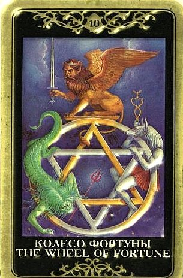

В колоде Таро немало карт, возвещающих наступление переломного момента в жизни – это и Смерть, и Башня, и Суд, и даже Шут. Это не удивительно – наша жизнь полна трансформаций, рост происходит благодаря кризисам, окончание одного периода становится началом другого. Но каждая из этих карт акцентирует свой собственный род перемен.
То же самое можно сказать про Колесо Фортуны.
Это карта перемен и, в отличие от тех же Смерти и Башни, традиционно считается добрым предзнаменованием!

На событийном уровне оно и в самом деле часто соответствует ситуациям, где мы ничего не можем поделать, и которые при этом затрагивают самые основы устоявшегося хода вещей.
Но что ни делается – все к лучшему, и эти ситуации можно определить скорее как «счастливый случай» нежели «полная засада».
Все обернется в пользу вопрошающего без каких-либо особых волевых усилий с его стороны (хотя ощущение полной неисповедимости и «случайности» происходящего может веять прохладным ветерком – а что, если бы я пришел на пять минут позже? А что, если бы....? страшно подумать, все было бы по-другому!).
Но в том-то и фокус Десятого Аркана, что об этом можно не думать.
Судьба синхронизирует все с поистине космической точностью.
Колесо Фортуны – это одна из самых мистических карт.
Нередко в ведении этой карты оказываются вопросы возвращения к чему-то, какие-то повторяющиеся ситуации.
В жизни все повторяется, в том числе чисто кармически, все возвращается на круги своя - чувства, мысли, события.
Эта карта говорит о покорности року, о «наступлении момента» и возвращении к своей судьбе, о чем-то, над чем мы не властны.
Все происходит по воле рока и все суть подарок судьбы.
Выпадение карты говорит о том, что будущее человека решается СЕЙЧАС, НО ВОВСЕ НЕ ИМ САМИМ.
Это – поворотный пункт в жизни, хотим мы того или нет.
Десятый Аркан, появившись в раскладе, может напоминать, что ситуация, какой бы она ни была, плохой или хорошей, рано или поздно изменится, и именно сейчас Колесо Судьбы набирает скорость.
Традиционные значения карты – успех, везение, счастье.
Карта указывает, что случится нечто, чем мы едва ли можем управлять и чего никак не могли предвидеть.
Выпадение Колеса Фортуны – это указание на то, что в жизни пошла динамика, которую надо воспринимать философски (а соседние карты могут подсказать, к чему идет дело).
Но к чему бы оно ни шло, речь как правило не идет о результате каких-то сознательных усилий.
Может совершенно незаслуженно повезти – эта карта предсказывает неожиданную улыбку судьбы.
Однако для того, чтобы однажды повезло, надо дерзать («Фортуна благоволит храбрым»).
Кому-то Колесо Фортуны кажется «несправедливым», но на самом деле это просто другая справедливость – счета подбиваются на таком уровне, на котором мы не можем наглядно сопоставить причину и следствие.
То, что происходит по Колесу Фортуны, кажется нам Случайностью – счастливой или роковой, - но на самом деле тут нет ничего случайного.
Олицетворяя саму Судьбу, Колесо Фортуны обладает такой мощью кармического разрешения, которая нам кажется непостижимой. Поэтому с нашей человеческой точки зрения карта скорее говорит об Удаче и Везении, о счастливых неожиданных возможностях, чем о прямых заслугах и результате сознательных трудов.
Неожиданное счастливое событие. Удача, успех, везение, шанс, который дается, может быть, раз в жизни и совсем не случайно. Непредсказуемый, судьбоносный поворот событий. Победа, успешное преодоление препятствий.
Пожалуй, можно согласиться с тем, что трактовка Колеса Фортуны сильно зависит от окружающих карт в раскладе, но здесь также нет единого мнения.
ЛИЧНЫЕ ОТНОШЕНИЯ
В настоящее время человек чувствует, что в жизни все остается по-прежнему и он ничего не в силах изменить, будь то не очень устраивающие отношения или жизнь без партнера.
Но по Колесу Фортуны грядут перемены, личная жизнь обещает наладиться, причем нет нужды предпринимать какие-либо специальные усилия, чтобы обрести удачу, предвещаемую этой картой.
Все произойдет само по себе, когда для этого настанет время, и просто потому, что вопрошающий будет в нужное время в нужном месте.
Важный аспект этой карты – верность человека себе самому.
В этом случае счастье найдет его, в любом случае с ним произойдет именно то, что является наиболее важным.
Как говорится «будь тверд, а здесь тебе не изменят».
Другой важный аспект карты – отказ от влияния и контроля, доверие ходу событий.
Это относится как к одиноким людям, так и к тем, кто хотел бы как-то изменить существующие отношения.
Колесо Фортуны учит тому, что в любых близких отношениях существует некий естественный цикл, времена упоительной близости сменяются периодами некоторого отчуждения и эмоционального спада, и не надо делать из этого трагедии и пытаться обязательно взять это под контроль. Волна ушла, волна придет. Ходите по песочку, держась за руки. Все вернется на круги своя.
По Колесу Фортуны идут так называемые «кармические отношения» или отношения, по которые можно сказать «Это судьба!» (что вовсе не гарантирует безоблачного счастья и не исключает весьма драматичного исхода).
В этом случае человек не чувствует себя «свободным» (то есть, совершенно не властен над своими чувствами), по сути, на него возложена задача, от которой невозможно уклониться, ибо этот человек действительно его судьба.
Связь становится «роковой» - хотя ясно, что отношения не являются ни легкими, ни понятными, притяжение сверхъестественное, выбора нет и отступать некуда. Ничего этой силе человек не может противопоставить – только ей следовать. Разумеется, такие встречи оказываются неизбежными.
Колесо Фортуны учит, что в жизни есть то, что «просто случается», люди оказываются в нужном месте в нужное время, причем «так получилось», планы были другие.
Но и контролировать что-то в этих отношениях скорее всего не удастся.
Тот факт, что их уготовила сама судьба, не означает, что она непременно подстелила соломку.
Вспышки страсти, разрывы – все будет происходить непостижимо, человеку будет казаться, что его несет как щепку в потоке.
Человеку не всегда свойственно понимать, что для него хорошо, а что нет.
Иногда он страдает от того, что что-то исполнилось не так, как он себе это представлял.
Но на самом деле то, что с ним происходит – это подарок судьбы и оптимально овтечает глубинным основам его существа и сложившимся условиям развития.
Качественно реализация Колеса Фортуны зависит от реального кармического багажа конкретного человека.
Но в общем этот Аркан предвещает обретение подходящего партнера и счастливое развитие отношений.
Иногда – повторение какого-то сценария, возвращение на круги своя (причем как в рамках одной жизни, так и через воплощения).
В этом случае Колесо Фортуны дает возможность осознать, наконец, стереотипы своего поведения в отношениях с другими, уловить какие-то повторяющиеся гештальты, понять причины ошибок, истоки боли, природу барьеров.
Это – драгоценный дар.
Именно благодаря ему человеку удается иногда «изменить судьбу», что-то исправить, сделать по-другому.
А судьба – она все видит, все слышит.
По Колесу Фортуны идут всякие «запрыгивания в последний вагон» - вступление в брак, которого человек долго избегал, обзаведение потомством на склоне репродуктивных лет и прочие шаги такого рода